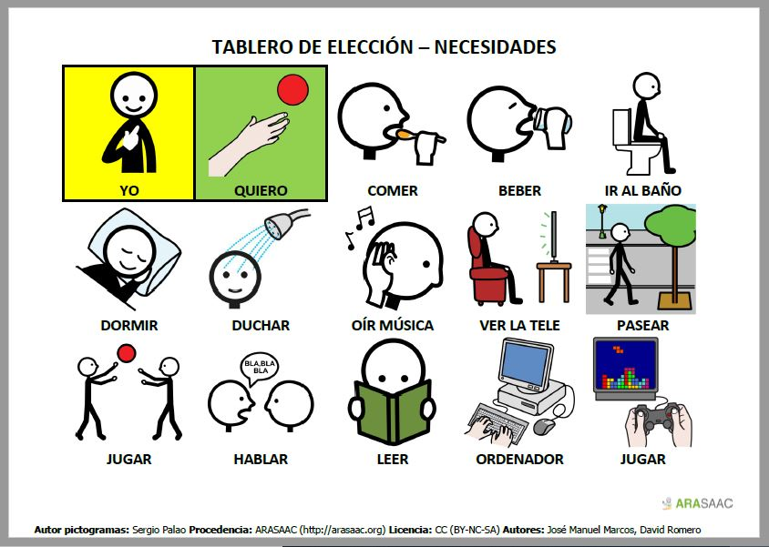

Recursos
Las personas con afasia pueden beneficiarse de determinadas ayudas o apoyos para la comunicación. Son herramientas muy útiles para ambos interlocutores ya que facilitan tanto la expresión como la comprensión de ideas.
Los tableros de comunicación son probablemente los recursos más empleados en primer lugar en los casos de afasia de aparición repentina (causada por ictus, traumatismos...) junto con las tradicionales pizarras y libretas. Se trata de superficies con pictogramas, fotografías, letras, palabras o frases que hay que señalar como apoyo o en sustitución de la comunicación oral. Lo utilizan principalmente las personas con dificultad de expresión, pero también los interlocutores de las personas con dificultad de comprensión. Idealmente tienen que ser personalizados para adaptarse a las necesidades de cada persona, pero en un primer momento resultan útiles los cuadernos de recopilaciones situacionales como el de CEAPAT-IMSERSO.
Las aplicaciones de lectura en voz alta de webs y documentos son útiles para aquellas personas con problemas de comprensión escrita. Algunas de las más utilizadas son Speechify, TTSReader y Luvvoice
Para las personas con dificultad de expresión oral, se pueden usar aplicaciones similares a la anterioras que leen en voz alta el texto que se escribe en el editor. Un buen ejemplo es Texto a voz.